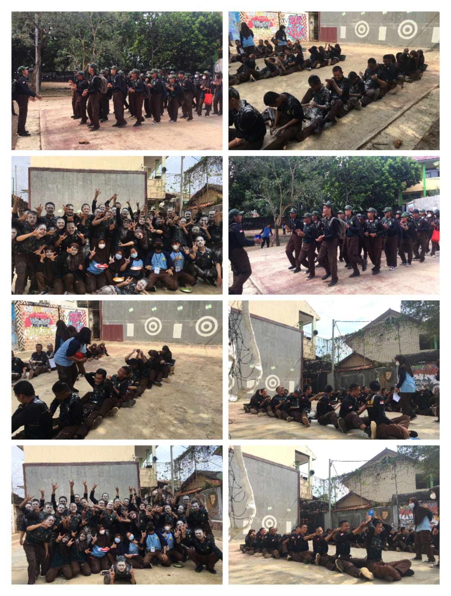
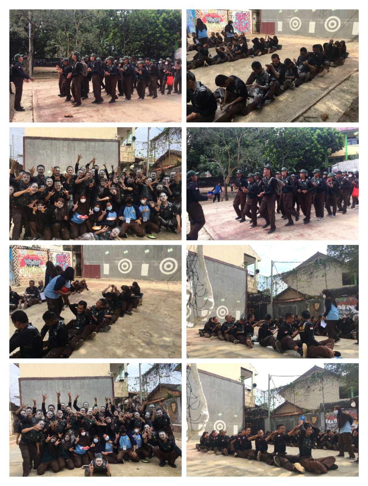

PKBN di SMKN 1 SUBANG di laksanakan selama 5 hari dari hari senin sampai harin jumat.di hari pertama kami merasa kelelahan karena ini pertama kalinya kami melatiih fisik kami
Dan di hari ke dua ada beberapa yang sudah kuat dan ada beberapa yang masih belum beradaptasi dengan latihan fisik ini.
Di hari ke tiga kami sudah mulai terbiasa dengan latihan fisik ini dan kami harus mempersiapkan fisik kami untuk hari ke-4 karena pada hari ke-4 di lakukan tes.
Tes di hari ke-4 seperti tes polisi karena terdiri dari tes push-up,sit-up,lari 20 menit,pull-up.kami pun berhasil menjalankan tes ini dengan lancar
walaupun hasilnya tidak sesuai keinginan.
 

dan tibalah hari jumat atau last day,di hari ini tidak ada latihan fisik hanya ada games untuk menambah kedekatan anak-anak satu kelas.
di hari ini sangatlah meriah karena kami semua bermain bersama dan bersebda gurau.
Saat kami semua selesai melaksanakan ibadah sholat jumat,kami beerkumpul bersama untuk latihan PBB agar di siang nanti kami bissa menjadi juara.
kelas X RPL 1 mendapat giliran tampil pertama,perasaan kami pun gugup..tetapi kami berhasil tampil dengan baik.
dan kelas X RPL 1 memenangkan gelar
Danton terbaik yang diraih oleh Kakak Egi renaldi. sore pun tiba,sudah saatnya acara pelantikan kammi dimulai..acara pelantikan pun sudah selesai
kami lanjut ber foto dan selfie untuk mengabadikannya menjadi kenangan,karena acara ini hanya ada di saat kami kelas 10